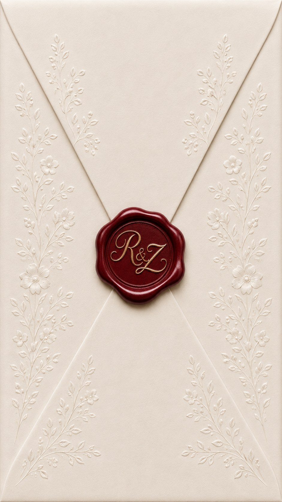

Two Souls
One destiny
A Lifetime written by Allah
Dear Friends and Family
Join us for an evening of love, laughter, duas, and unforgettable memories as we begin our forever.

Wedding Day
Two Souls
One destiny
A Lifetime written by Allah
Dear Friends and Family
Join us for an evening of love, laughter, duas, and unforgettable memories as we begin our forever.
We kindly ask guests to avoid deep red and maroon attire for the celebration.
Kindly, no boxed gifts please.
To help us prepare for a joyful celebration, kindly confirm your attendance.
Hope to see you there!